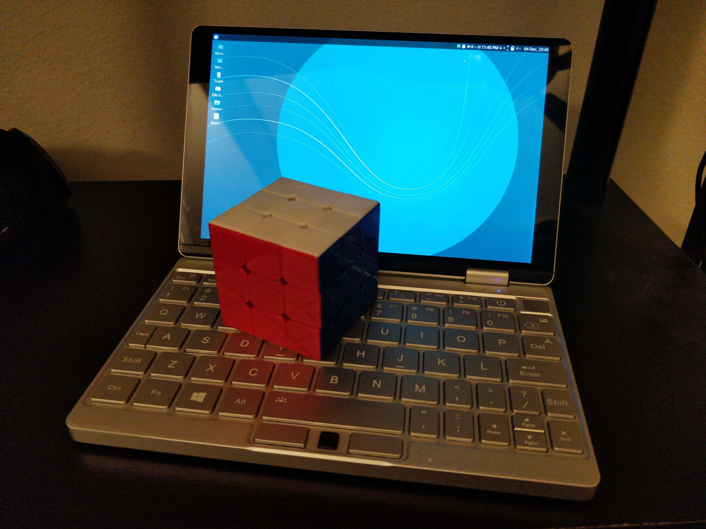
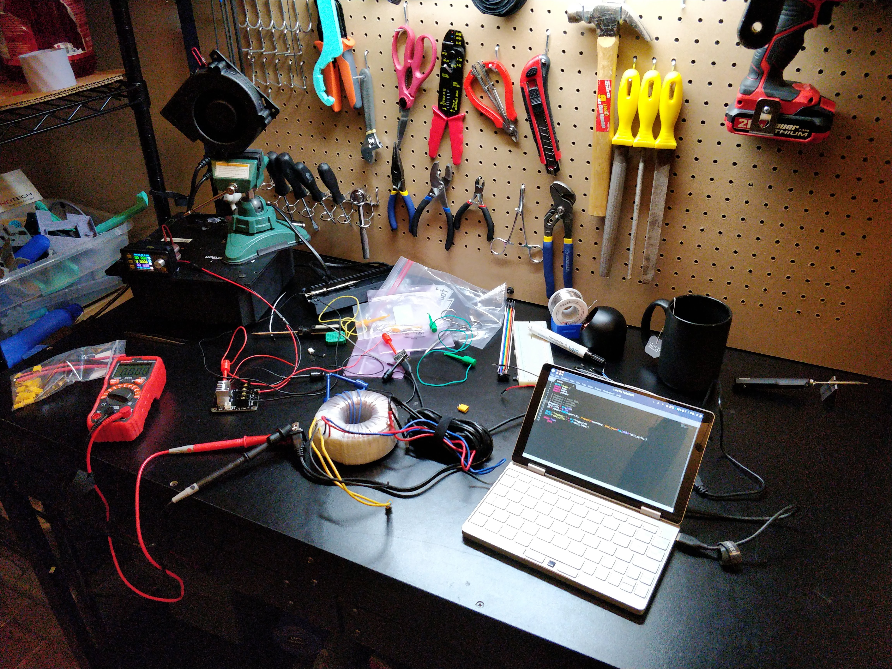

onemix 3 yoga review (featuring: Linux!)
I wanted a laptop-like device for connecting to various electronics projects, microcontrollers, 3D printers, etc.
As a bonus, such a laptop would be very light in my backpack, and therefore perfect for travel, especially at hacker conferences where a laptop is most useful.
So I got myself a Onemix 3 yoga.

pros/cons
I like this one for several reasons:
- touchscreen (with pen)
- USB 3.0 type-A and type-C
-
Linux compatibility (including touchscreen!)
(thanks to this post by liliputing for some compatibilty info before I bought it)
- reasonably good keyboard: 'qwertyuiop' is full-size, and most of the other buttons are there, if in weird places
- upgradable storage, with an extra (by default empty) M.2 2242 SATA bay
But there are some problems:
-
linux compatibility is possible, but not nearly as smooth as with a thinkpad or something
- the pen 'works' with the display in linux, but mouse clicking isn't implemented correctly. In windows 10 it works fine, but the latency is so bad as to be unusable anyway.
-
the accelerometer works in linux, but the y-axis is inverted. So landscape is upside-down.
I'm not sure an accelerometer is something I really want in a laptop anyway, though
- intel video drivers don't work. I'm using the open-source fallback ones
- when installing linux, the touchscreen doesn't work unless you touch it while the live installer is booting up. (yes, this is crazy weird...)
- the keyboard is actually just slightly smaller than full-size, and I don't particularly like it. (I like it better than the god-awful keyboard on my twice-as-expensive XPS-15 though lol)
- the screen is very dense, at 2560x1600, which the CPU just barely is able to handle with the fallback drivers. I usually run it at 1280x800, which also solves display scaling concerns, which is nice.
size
Before buying it, I 3D printed a 'blank' that is the same size as the closed laptop, with corners rounded to roughly the same radius (OnShape cad link here).
With this, I could check where it would fit:
- just barely fit in the front pocket of my favorite jeans
- somewhat reasonable fit in older jeans that I don't like as much
- too wide to fit in back pocket of basically any pants
- fits in hoodie front pocket, but kind of sticks out. It's secure there, but still feels wrong. Also the weight makes the hoodie sag.
- fits inside tablet pocket in backpack no problem whatsoever
- fits inside laptop pocket in backpack horizontally (i.e. 90 degress off of how a normal laptop fits)
It would have been cool if it could fit inside a (large) jeans front pocket, but I think that would require too much shrinking of the keyboard.
Also, of note: the keybord is roughly equally comfortable for me typing with all fingers or just my thumbs. Interesting.
Size comparison to a Thinkpad X230
linux compatibility
I settled on ubuntu budgie, since it's interface is good, and the compatibility is also good.
(XUbuntu (my previous favorite) had problems with the touchscreen working at all, and also rotating the touchscreen when the screen rotates.)
I made various tweaks, both fixes and personal preference improvements:
disable auto rotation
(reference):
sudo systemctl stop iio-sensor-proxy.service
sudo systemctl disable iio-sensor-proxy.service
sudo apt remove iio-sensor-proxy
Add desktop entry for restarting the budgie shell:
nohup budgie-panel --replace
The Budgie shell UI does occasionally glitch-out when changing screen resolutions and display densities.
(reference)
install tlp to help with battery life (it's still not that great in linux though)
disable the ubuntu alert sound (reference)
firefox tweaks
enable firefox to use touch gestures (one finger scrolling) (reference: ArchWiki):
echo MOZ_USE_XINPUT2=1 |sudo tee /etc/security/pam_env.conf
reboot
(command untested)
about:config:
set dom.ipc.processCount to 2 and browser.preferences.defaultPerformanceSettings.enabled to false
and do
ps -e | grep 'Web Content'
to check actual number of content processes.
enable web render by setting
gfx.webrender.all
to
true
resolution and display scaling
I found the display resolution menu in budgie to be not very good. so I wrote a script that generates desktop entries to set common display parameters that I need.
The built-in LCD reports that it's only supported resolution is the full 2560x1600, but I found that it can display much more, even non-integer multiples of width or height.
If the resolution isn't the same aspect ratio, it displays black bars instead of stretching the picture.
# /etc/X11/xorg.conf.d/10-monitor.conf
Section "Monitor"
Identifier "eDP-1"
Modeline "1440x2560_60.00" 318.00 1440 1568 1720 2000 2560 2563 2573 2651 -hsync +vsync
Modeline "1080x1920_60.00" 176.50 1080 1168 1280 1480 1920 1923 1933 1989 -hsync +vsync
Modeline "800x1280_60.00" 85.25 800 856 936 1072 1280 1283 1293 1327 -hsync +vsync
Modeline "720x1280_60.00" 77.50 720 776 848 976 1280 1283 1293 1327 -hsync +vsync
EndSection
accessories
This is where a laptop this small really shines: I can have it on my bench, with stuff connected to it, and it doesn't take up too much space on the bench!

conclusion
Maybe not a good general purpose laptop on it's own.
Being able to dock through USB 3.0 type-C makes it a strong contender, though.
It's not fast, but it's definitely usable.
Much more usable than the common netbooks that pre-dated this (by a full decade at this point!).
{kind=link}